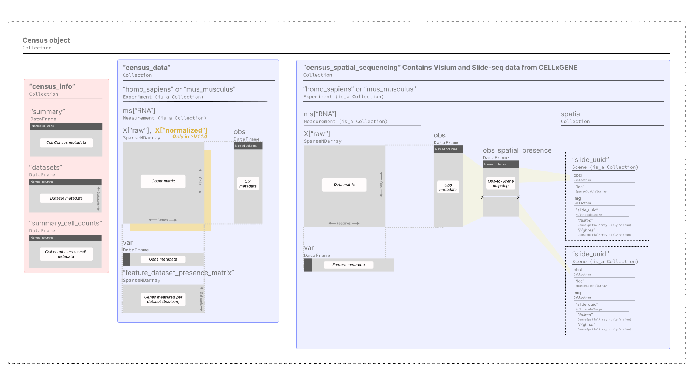

Beta Release of Spatial Data on Census!
Published: Jan 14, 2025
By: Cathy Stolitzka, Isaac Virshup, Maximilian Lombardo
The Census team is pleased to announce the release of Spatial data on Census!
This has been a large joint effort between the Census team and TileDB to create an easy-to-use and backwards-compatible spatial schema that enables easy analysis with non-spatial and spatial data!
This first release is a beta release with the ability to export all spatial data (10x Visium and Slideseq) from an obs/var query in SpatialData. The ability to export SpatialData with spatial-based filters, transforms, etc., is not supported and will be implemented in a future release.
SOMA Spatial Data Model

Building Blocks
SOMAExperiment
A collection encapsulating data from one or more single-cell datasets, with reserved attributes:
Field Name |
Field Description |
|---|---|
|
A DataFrame for observation metadata |
|
A collection ( |
[NEW] |
A collection of |
[NEW] |
A DataFrame to map observations to |
[NEW] SOMAScene
A collection of spatial assets. All assets in one Scene should correspond to the same physical coordinate system. The collection provides operations for getting, setting, and transforming between coordinate systems, with reserved attributes:
Field Name |
Field Description |
|---|---|
|
A collection of spatial arrays and collections. The rows in these arrays correspond to observations and may correspond to |
|
A collection of collections for spatial arrays on the |
|
A |
[NEW] SOMAImageCollection
A group of multi-resolution images that can be accessed by levels. Below are some sample operations on this collection type. Every SOMAImageNDArray in the collection must be mappable to the same physical space by translation and scaling only.
Operation |
Description |
|---|---|
|
Sequence of level numbers in the slide |
|
A |
|
A sequence of down-sample factors for each level of the slide |